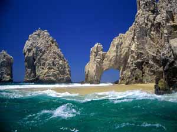

Sponsors 2008
Our History
The Scripps/UCSF conference has been held for the past 18 years during the month of May in Los Cabos, Mexico. The meetings originated from a grant from the Rockefeller Foundation supporting research collaborations between scientists at UCSF, The Scripps Research Institute (TSRI) and the MRC, Cambridge.
Drs. Daniel Santi and Ian Wilson started the meetings and created the unique scientific ambience. The meeting style has remained unchanged but, nine years ago, the venue moved from Cabo San Lucas to the all-inclusive El Presidente Hotel in San Jose del Cabo. The meeting includes approximately 60 selected participants, that are a mixture of laboratory heads, postdocs and students from UCSF, UC Berkeley, TSRI and UCLA combined with representatives from biotech, big pharma, scientific equipment companies, VCs and patent lawyers.
The spirit of scientific research is enhanced and refreshed in this stunning setting as well as by the interesting and eclectic mix of participants. This format has worked well and we look forward to many more successful meetings in the years to come.